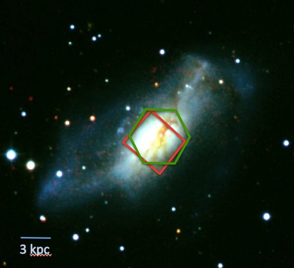

SFB "The Milky Way System" - Quantifying the Impact of Feedback in the Milky Way Star-Forming Regions
LVM will resolve the internal structure of star forming regions and ionized nebulae, enabling us to observe the "energy injection scale" and quantify the impact of feedback. Within the Baryon Cycle group, our subproject aims to compile catalogs of essential ancillary data and optimize the survey strategy, in order to ensure that SDSS-V/LVM data can be exploited as soon as it become available.
Learn more

The Reach of Stars: Connecting physical processes in the ISM with galaxy evolution
Using privileged access to KINGFISH, a legacy dataset of 61 galaxies, and data from our neighbour, the Andromeda galaxy (M31), we aimed to measure the "The Reach of Stars". We studied; a) the cooling mechanisms of the ISM using molecular and atomic emission lines, and b) ISM heating from the scales of molecular clouds and up, respectively, and reconcile these with the observed distribution of stars.
This project was funded through the DFG priority program 1573 "Physics of the Interstellar Medium", and ran from 2012-2018. A list of project-related publications is available here.
Learn more